Home » What lives there » Buried Works
Buried Works
The builders who made the ancient cities and the strongholds left one more place behind. You will find it by the hatch.
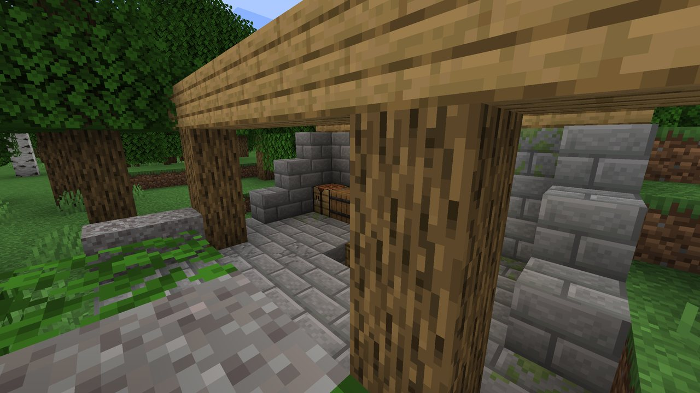
Where#
The Buried Works are the builders' lab, a rare underground structure in the overworld.
- About as rare as strongholds: roughly one in every 4,000 by 4,000 blocks. The nearest is usually 1,200 to 2,500 blocks away.
- Only on flat, dry ground, with the ground between y 58 and y 200. Never under water and never in The Remembering.
- On the surface there is only the hatch: a stone opening under an oak lean-to, with a ladder going down.
Finding one#
- A journeyman (level 3) cartographer sells a Buried Works Map for 13 emeralds and a compass, the way they sell the trial chamber map. The map marks the hatch with its own icon
 . Like the vanilla maps, a cartographer far from any lab does not offer it.
. Like the vanilla maps, a cartographer far from any lab does not offer it. /locate structure backrooms:buried_works(vanilla, cheats on) or/backrooms locate worksfind the nearest one.- Going down into one gives the advancement Buried Works.
What is inside#
Below the hatch: a shaft, then stone brick halls like a stronghold's, mossy and cracked.
- The hub: four doors, all alike. The machine hall is behind one of them, sometimes further on down a hall, round a corner or down a short stair, 33 to about 70 blocks from the hatch.
- The machine hall: the builders' last machine in the far wall, a broken Reinforced Iron frame, with the Backrooms pouring out of it: mushroom and mud on the floor, birch on the wall round the frame, sandstone overhead, thinning out into stone brick. The parts are in the chest beside it.
- The foundry, storerooms left mid-evacuation, the library (archive) with the Shape painting, and smaller rooms: bunks, a mess hall, records, a cistern, a guardroom, a shrine, a workshop, a collapsed hall.
- Gravel heaps to brush, by the hatch and inside.

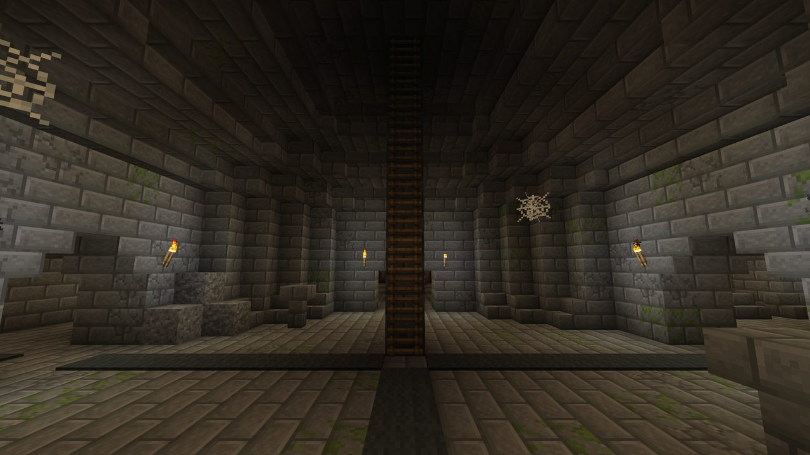
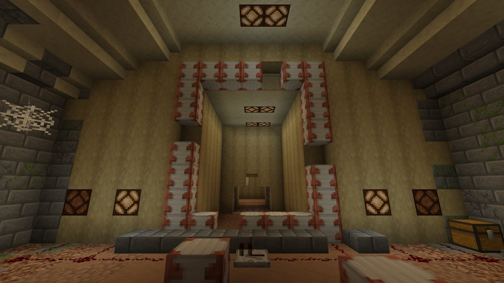
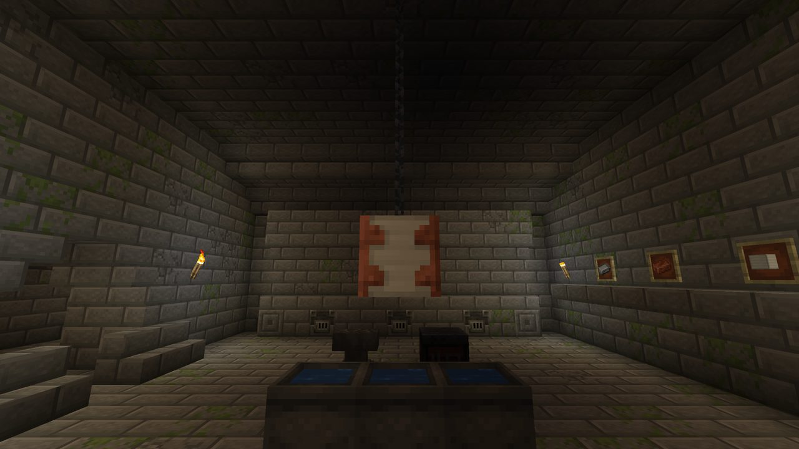
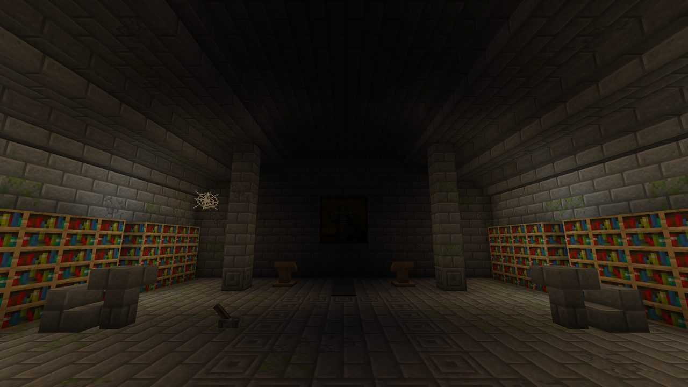
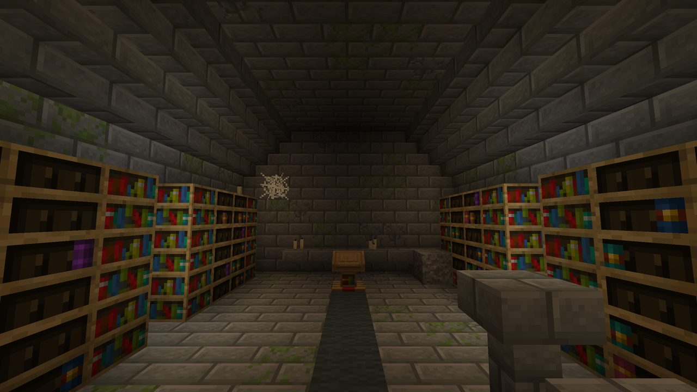
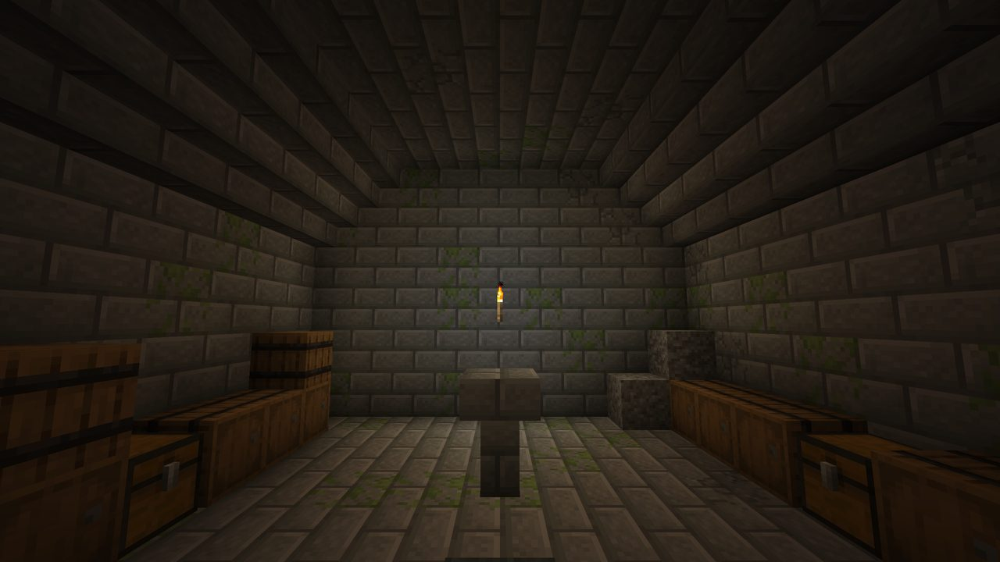
Repairing the machine
The chest beside the frame holds 4 Reinforced Iron, enough to close the gaps, and a Remembered Upgrade. Put the frame back together and pull the lever (or give it any redstone signal). See Getting In.
Loot#
| Where | What |
|---|---|
| Machine hall chest | 4 |
| Archive chests | A |
| Storeroom chests | Food, candles, lanterns, paper, books, string, wool, a compass, maps; a 30% chance of one or two Potions of Insanity or a splash one; sometimes a Doorway or Lamp sherd |
| Foundry chests | Copper and iron ingots, iron nuggets, coal, raw copper, redstone |
| Barrels | Supplies: potatoes, wheat, coal, torches, planks, bread, string, paper, iron nuggets, copper, redstone, bone meal, leather |
The machine hall, foundry and barrels never hold Potions of Insanity. Remembered Upgrade templates also turn up in The Remembering, in 9% of the chests in remembered rooms and in the refuges that come in groups.
Archaeology and sherds#
Brush the suspicious gravel by the hatch and inside the lab. It holds the four builder sherds, the Builder Armor Trim, bricks, candles, wheat, sticks, emeralds and, rarely, the music disc Day One (more often at the gravel by the hatch).
Doorway Pottery Sherd
The door the builders made.
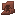
Lamp Pottery Sherd
A lamp that will not go out.
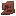
Pit Pottery Sherd
A pit that goes down a long way.
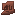
Copy Pottery Sherd
A thing and its copy.
All four work on decorated pots like vanilla sherds. Finding one gives the advancement Pieces of a Picture, and getting the disc gives Lights Left On.
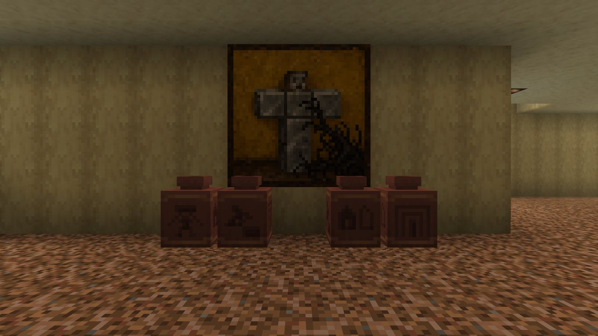